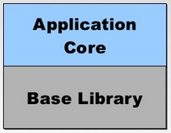

Architecture
The architecture of your application is one the core freatures of scalejs. Scalejs application architecture was inspired by Nicholas Zakas' Scalable JavaScript Application Architecure seminar. Scalejs took these concepts and implemented them. Along the way, minor adjustments to the made, but overall, the architecture will follow what you see in the slides.
Core
The core of the application has only two responsibilities:
- Abstracting functions away from base libraries
- Registering and Starting Modules
A visual representation of the core would look like this:

One of the major advantages of this pattern is that your application code is not closely coupled to base libraries. For example, let's say we wanted to use a jQuery UI component like tabs. In order to do that without scalejs, you would need to write your application in such a way that it would directly interface with the jQuery UI API. The issue with this is that it is not maintainable or scalable. It is difficult to change or update the tab control without having to rewrite your application code as well.
This is why scalejs enforces the abstraction of base libraries away from the application. The application will interface with the core and never with the base libraries themselves.
The application also is responsible for registering and starting modules. This is done in app.js in the app folder for a scalejs project. It looks like this:
app.js
/*global require*/
require([
'scalejs!application/main'
], function (
application
) {
'use strict';
application.run();
});
To add additional modules, you just need to append a comma and the name of the module to this string: scalejs!application/main.
Scalejs uses requirejs plugins (that is what scalejs!application is) to register the modules; all you need to do is reference them.
The application is started using the run method. Before run happens, all of modules are registered and bootstrapped so that they are ready to run.
Modules
A scalejs Module is a self-containing component of your application. Modules consist of one of more files that define the behaviour of the component. Modules should be able to live on their own - with the exception being a module which is in charge of the layout, which will have the job of setting up regions for other modules to appear. Modules are loosely coupled with other modules, allowing you to develop, test, and change modules independently from others without affecting how the other modules function.
Each module has its own sandbox which gives the module access to core functions. The sandbox is similar to the core in the way that it abstracts base libraries away from the app. But it adds an additional step of security, because each function in the sandbox is a copy, and not a direct reference to the original function. Since each module gets its own sandbox, which is its own copy of functions for it to use, there is no possibility that a module will interfere with another module by modifying the sandbox.

All modules also have access to an application-wide statechart which defines the flow of the application. By using the statechart, a module can react to events from other modules, or access properties of the state of the application.
Even though the scalejs core does not depend on the MVVM library, it is common that a developer will want to use MVVM. If using MVVM, each module will contain its own viewmodels, styles, views and bindings.
Sandbox
The sandbox is the container for all of the functions and tools modules can make use of. It is a consistent interface that provides everything a module needs. The sandbox can be extended with extensions. Functions within the sandbox live within the namespace of the extension which created them.
var // imports
root = sandbox.mvvm.root,
template = sandbox.mvvm.template,
registerStates = sandbox.state.registerStates,
state = sandbox.state.builder.state,
onEntry = sandbox.state.builder.onEntry;
It is common in your files that to make use of the sandbox, create a new variable to reference the function you would like to use. This is similar to "importing" the function like you would in Java or C#. This provides two immediate benefits: you will always be aware of what functions from the sandbox you are using by looking at the beginning of the file, and you won't have to write as much code in order to use a function which improves readability.